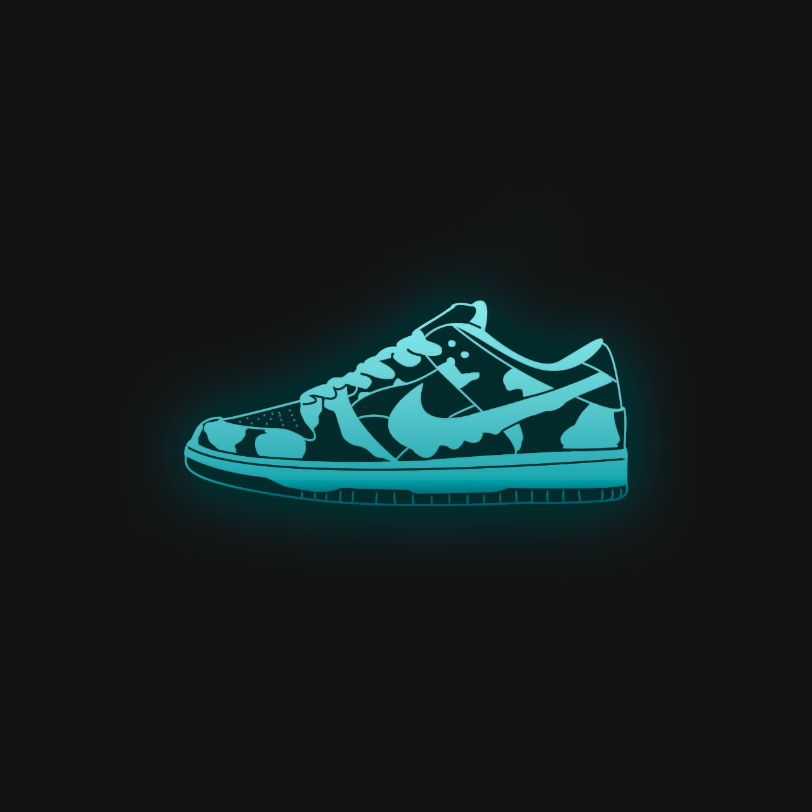

Yard CRM
Server Rebooted
45 min ago
Licence Expiring Soon
8 hrs ago
Kelly Portfolio.pdf
670 kb
Hi,
Alan
My Profile
Sign Out
Yard CRM
Main
Raffles
Categories
Tags
Announcements
Categories
Tags
User
User activity
Bans
Top
Statistics
Settings
Raffles
Name
Work name
Closing date
Results date
Registered users
Status
Action
Nike Off-White
Nike
21.01.2021
24.01.2021
100
Now
Nike Dunk Low
Данки
15.01.2021
17.01.2021
120
Ended
Nike Off-White
Nike
-
-
N/A
Future